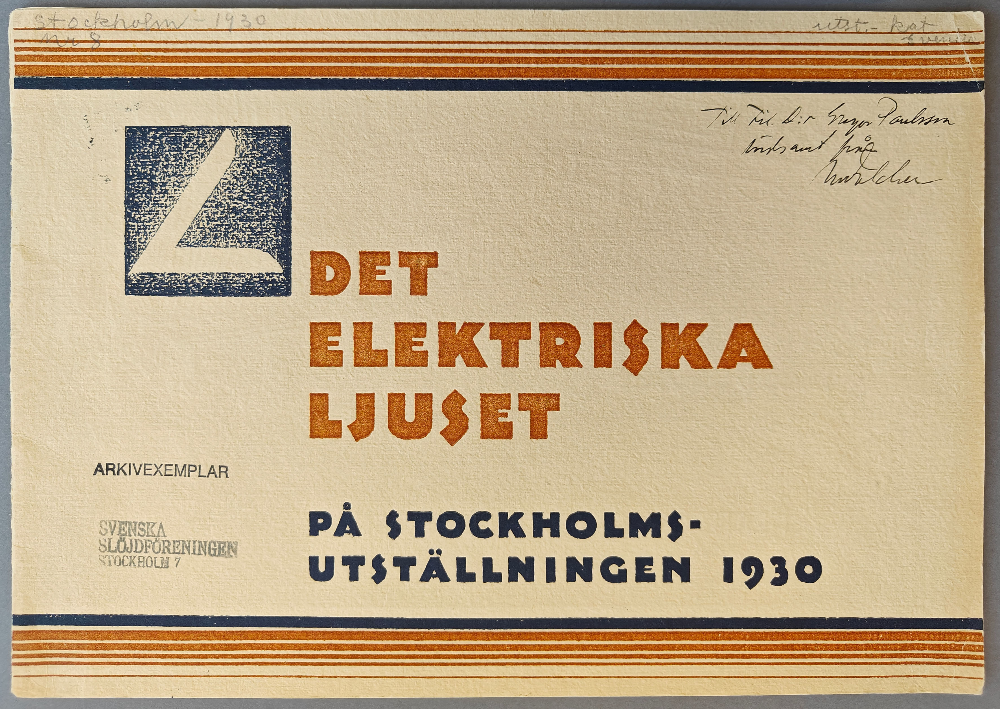
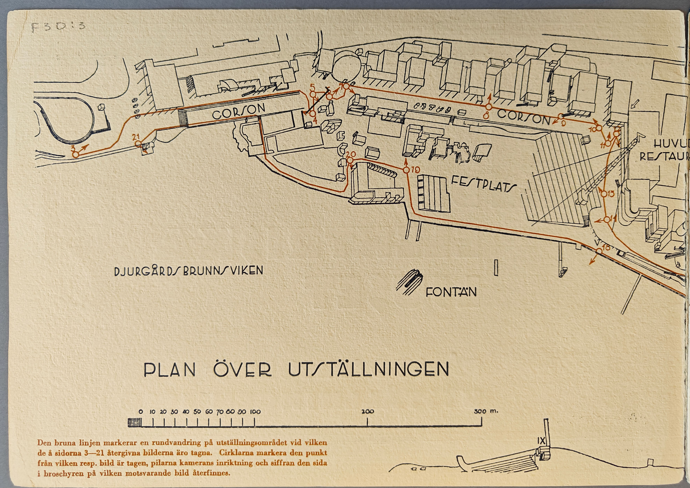
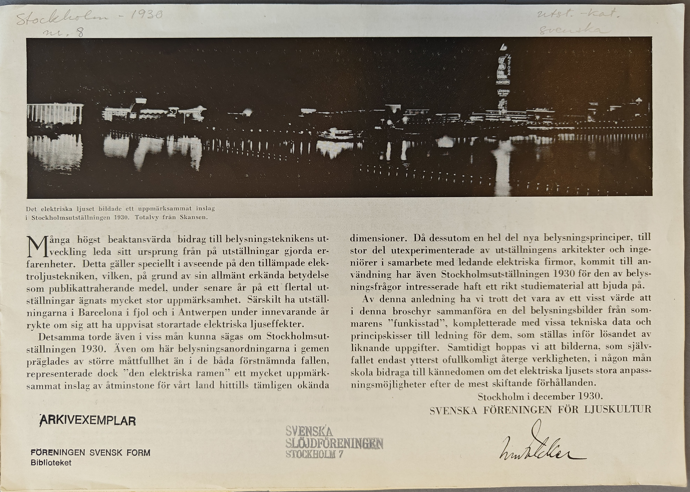
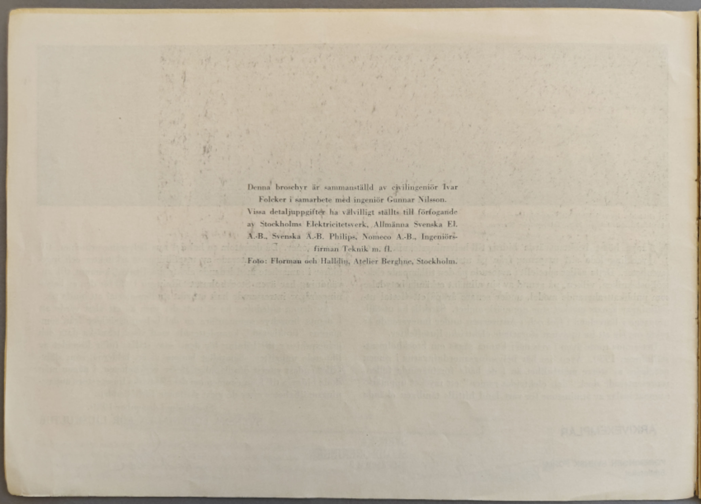
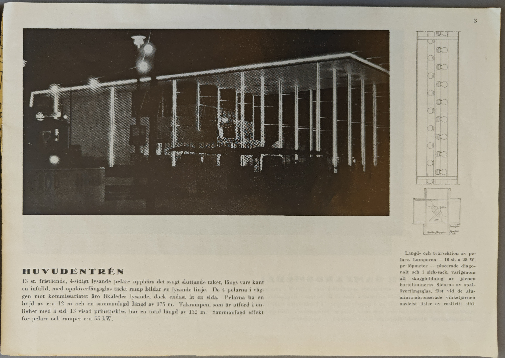
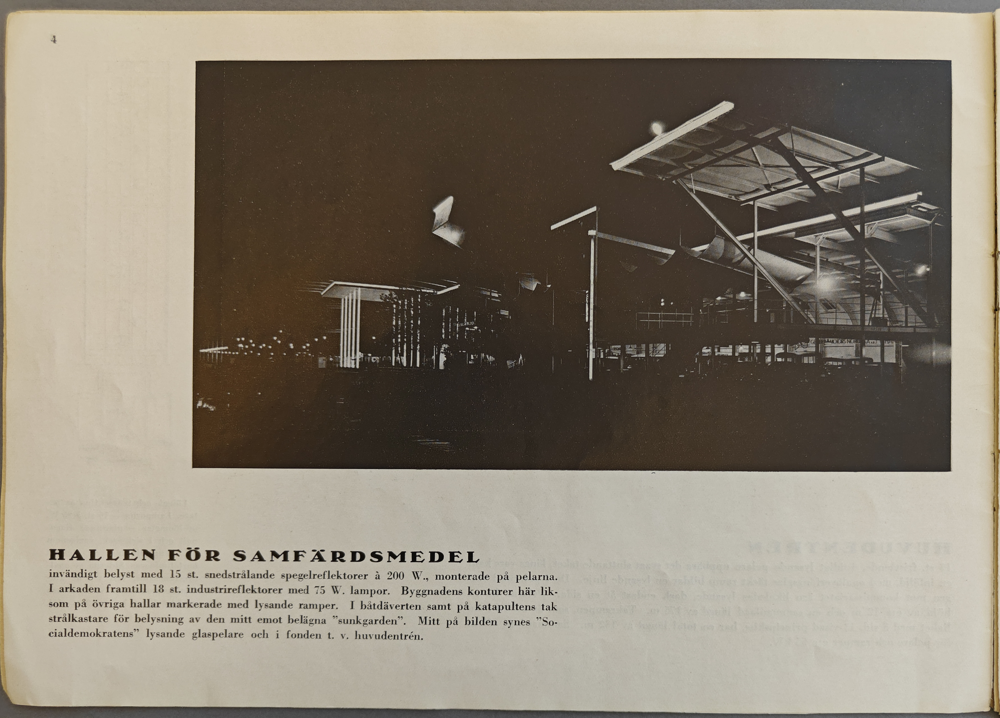
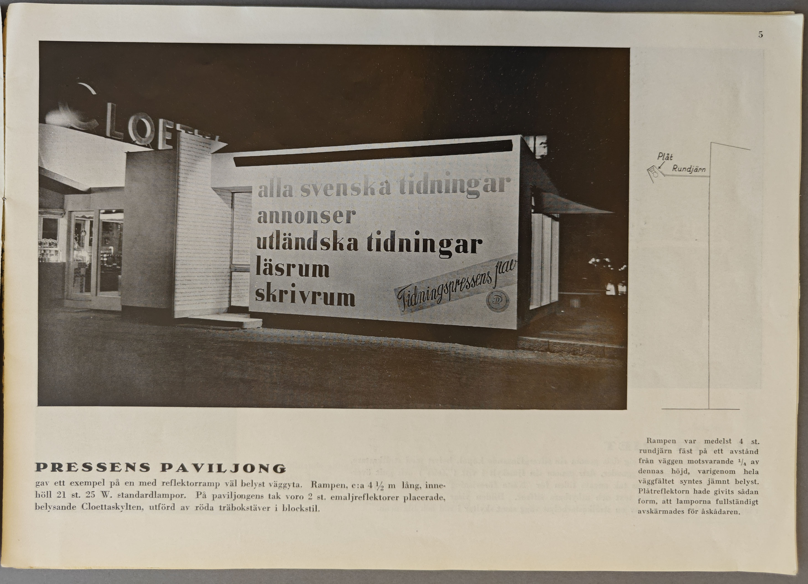

Images
Transcription
Handskrivet med blyerts: Stockholm-1930 nr 8 utst.- kat. svenska
DET ELEKTRISKA LJUSET
PÅ STOCKHOLMSUTSTÄLLNINGEN 1930
Handskriven dedikation: Till Fil. d:r Gregor Paulsson vördsamt från Ivar Folcker
Stämplar:
ARKIVEXEMPLAR
SVENSKA SLÖJDFÖRENINGEN STOCKHOLM 7

PLAN ÖVER UTSTÄLLNINGEN
Den bruna linjen markerar en rundvandring på utställningsområdet vid vilken de å sidorna 3-21 återgivna bilderna äro tagna. Cirklarna markera den punkt från vilken resp. bild är tagen, pilarna kamerans inriktning och siffran den sida i broschyren på vilken motsvarande bild återfinnes.

Handskrivet med blyerts: Stockholm-1930 nr 8 utst.- kat. svenska
Bildtext: Det elektriska ljuset bildade ett uppmärksammat inslag i Stockholmsutställningen 1930. Totalvy från Skansen.
Många högst beaktansvärda bidrag till belysningsteknikens utveckling leda sitt ursprung från på utställningar gjorda erfarenheter. Detta gäller speciellt i avseende på den tillämpade elektroljustekniken, vilken, på grund av sin allmänt erkända betydelse som publikattraherande medel under senare år på ett flertal utställningar ägnats mycket stor uppmärksamhet. Särskilt ha utställningarna i Barcelona i fjol och i Antwerpen under innevarande år rykte om sig att ha uppvisat storartade elektriska ljuseffekter.
Det samma torde även i viss mån kunna sägas om Stockholmsutställningen 1930. Även om här belysningsanordningarna i gemen präglades av större måttfullhet än i de båda förstnämnda fallen, representerade dock "den elektriska ramen" ett mycket uppmärksammat inslag av åtminstone för vårt land hittills tämligen okända dimensioner. Då dessutom en hel del nya belysningsprinciper, till stor del utexperimenterade av utställningens arkitekter och ingeniörer i samarbete med ledande elektriska firmor, kommit till användning har även Stockholmsutställningen 1930 för den av belysningsfrågor intresserade haft ett rikt studiematerial att bjuda på.
Av denna anledning ha vi trott det vara av ett visst värde att i denna broschyr sammanföra en del belysningsbilder från sommarens "funkisstad", kompletterade med vissa tekniska data och principskisser till ledning för dem, som ställas inför lösandet av liknande uppgifter. Samtidigt hoppas vi att bilderna, som självfallet endast ytterst ofullkomligt återge verkligheten, i någon mån skola bidraga till kännedomen om det elektriska ljusets stora anpassningsmöjligheter efter de mest skiftande förhållanden.
Stockholm i december 1930.
SVENSKA FÖRENINGEN FÖR LJUSKULTUR
Tryckt namnteckning: Ivar Folcker
Stämplar:
ARKIVEXEMPLAR
FÖRENINGEN SVENSK FORM Biblioteket
SVENSKA SLÖJDFÖRENINGEN Stockholm 7


HUVUDENTRÉN
13 st. fristående, 4-sidigt lysande pelare uppbära det svagt sluttande taket, längs vars kant en infälld, med opalöverfångsglas täckt ramp bildar en lysande linje. De 4 pelarna i väggen mot kommissariatet äro likaledes lysande, dock endast åt en sida. Pelarna ha en höjd av c:a 12 m och en sammanlagd längd av 175 m. Takrampen, som är utförd i enlighet med å sid. 13 visad principskiss, har en total längd av 132 m. Sammanlagd effekt för pelare och ramper c:a 55 kW.
Bildtext: Läng- och tvärsektion av pelare. Lamporna - 16 st. à 25 W. pr löpmeter - placerade diagonalt och i sick-sack, varigenom all skuggbildning av järnen bortelimineras. Sidorna av opalöverfångsglas, fäst vid de aluminiumbronserade vinkeljärnen medelst lister av rostfritt stål.

HALLEN FÖR SAMFÄRDSMEDEL
invändigt belyst med 15 st. snedstrålande spegelreflektorer à 200 W., monterade på pelarna. I arkaden framtill 18 st. industrireflektorer med 75 W. lampor. Byggnadens konturer här liksom på övriga hallar markerade med lysande ramper. I båtdäverten samt på katapultens tak strålkastare för belysning av den mitt emot belägna "sunkgarden". Mitt på bilden synes "Socialdemokraternas" lysande glaspelare och i fonden t.v. huvudentrén.

PRESSENS PAVILJONG
gav ett exempel på en med reflektorramp väl belyst väggyta. Rampen, c:a 4 1/2 m lång, innehöll 21 st. 25 W. standardlampor. På paviljongens tak voro 2 st. emaljreflektorer placerade, belysande Cloettaskylten, utförd av röda träbokstäver i blockstil.
Bildtext: Rampen var medelst 4 st. rundjärn fäst på ett avstånd från väggen motsvarande 1/4 av dennas höjd, varigenom hela väggfältet syntes jämnt belyst. Plåtreflektorn hade givits sådan form, att lamporna fullständigt avskärmades för åskådaren.